别让目的地成为你出发的理由
"
Stay interprets destiny....

懒得写字的博主 | Deanna
酒店就是一个我躲避现世，尽情放纵的Neverland
X
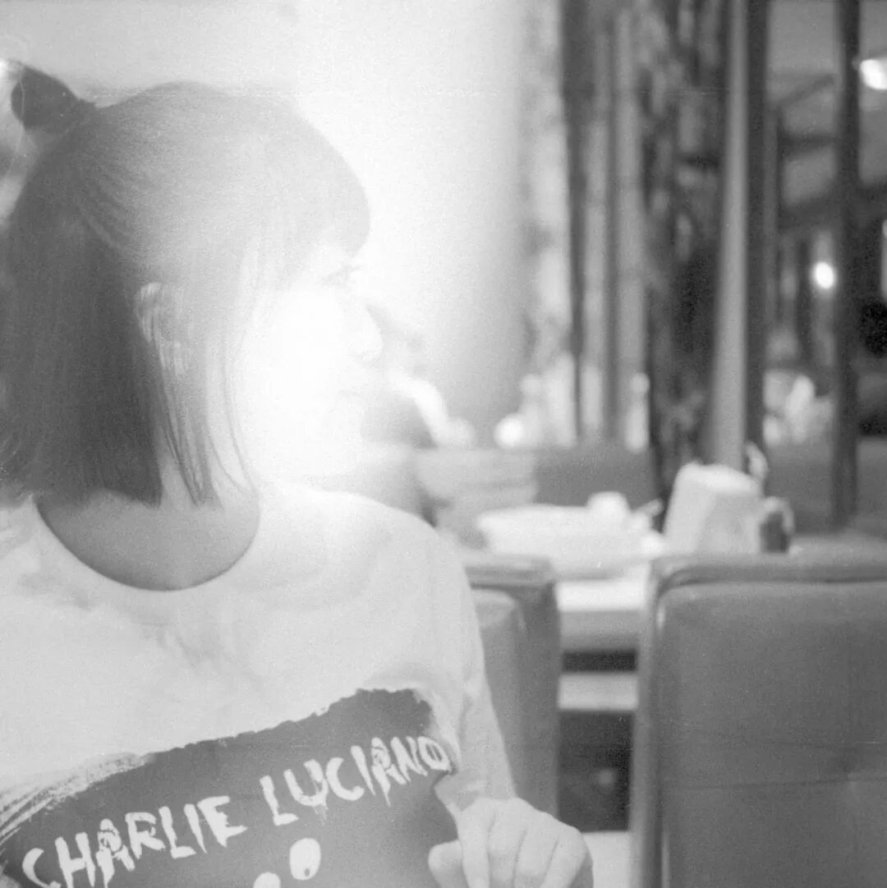
本期嘉宾 | Athena
寻觅一份停驻的美好，期待一次难忘的惊喜
01
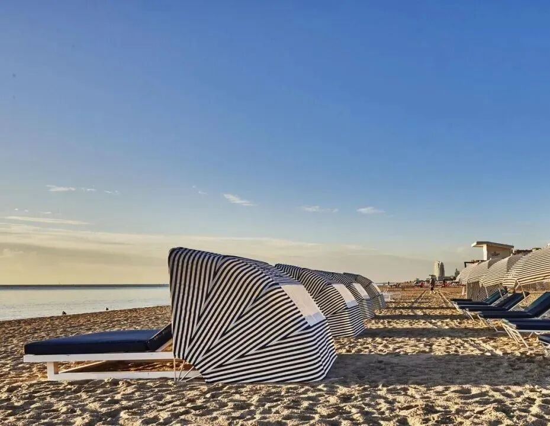
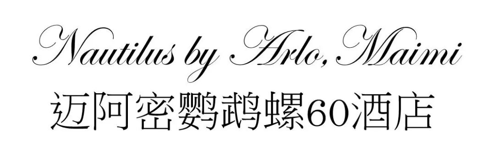
作为一个海滨城市, 迈阿密的 South Beach上有着各式各样的酒店, 之所以会选择鹦鹉螺是因为它满足了人们对迈阿密的全部想象：白色的酒店外墙, 延伸至海滩的悠然小径，Lobby边上的露天 Café……
梦想中的迈阿密就是这样，没错了！
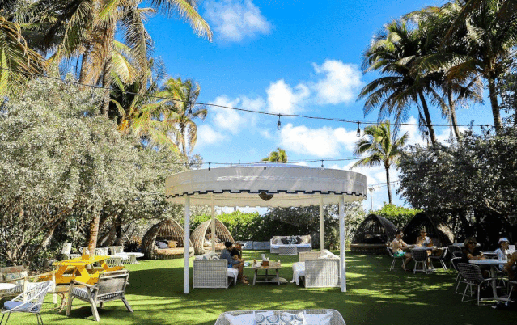
做一个晨间瑜伽或者是睡到自然醒, 下楼在早餐厅吃一顿充满美式风情的Brunch。果酱和 Cream丰富又好味, 焦黄的培根和浓重的cheese开启美好的一天，这个时候减肥已经不再是首要大事了。旅行的初衷不是走马观花，而是悠然自得。
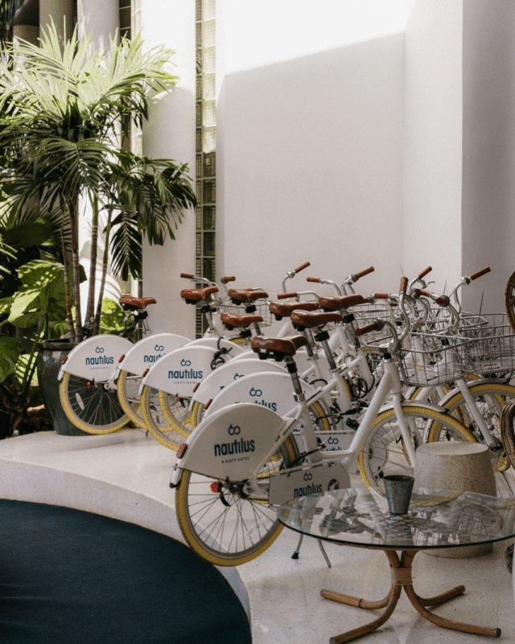
Lobby前的自行车, 好比希望你在将车停到酒店之后, 可以再骑行上路去感受 South Beach 北美和南美的文化交融。
在泳池边晒一场日光浴, 吃上一口奶香四溢的雪糕。下午漫步到酒店的私人海滩，在迈阿密标志性的海滩小站前，租上一把遮阳伞和躺椅, 继续享受美国最南端的骄阳，将 Freestyle的精髓展现到极致。
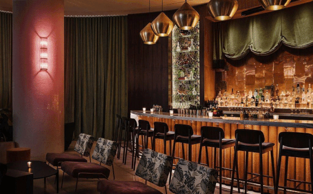
晚餐后，在酒店的 Jazz bar 喝上一杯鸡尾酒, 配以充满幸福感的 Fish Fries, 这份闲适才是度假的意义所在。当代的旅行, 酒店不仅仅是一个补给站, 更是旅行和度假中重要的一部分, 它也是你了解和感受目的地文化的重要一部分。
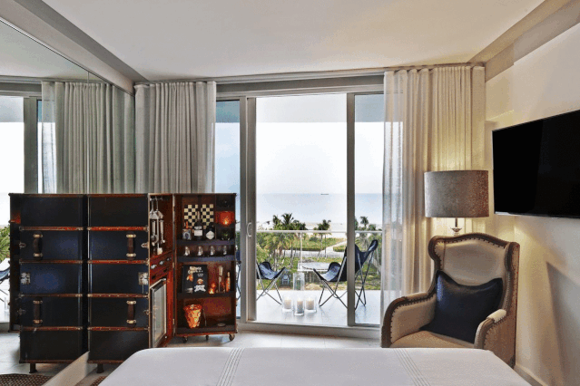
鹦鹉螺的房间不算大, 但是不管是木质的家具还是随意沿着墙放置的装饰画都有浓厚的美国文化气息, 随意又自然。虽然说酒店没有欧洲来得细腻和典雅, 也没有纽约来得摩登和现代, 但是在久负盛名的度假胜地, 当我们开着 Coventible 回到住店的瞬间, 仿佛自己和加州来此度假的名人一般, 在同一片星空下, 感受着同样的美好和惬意。
02
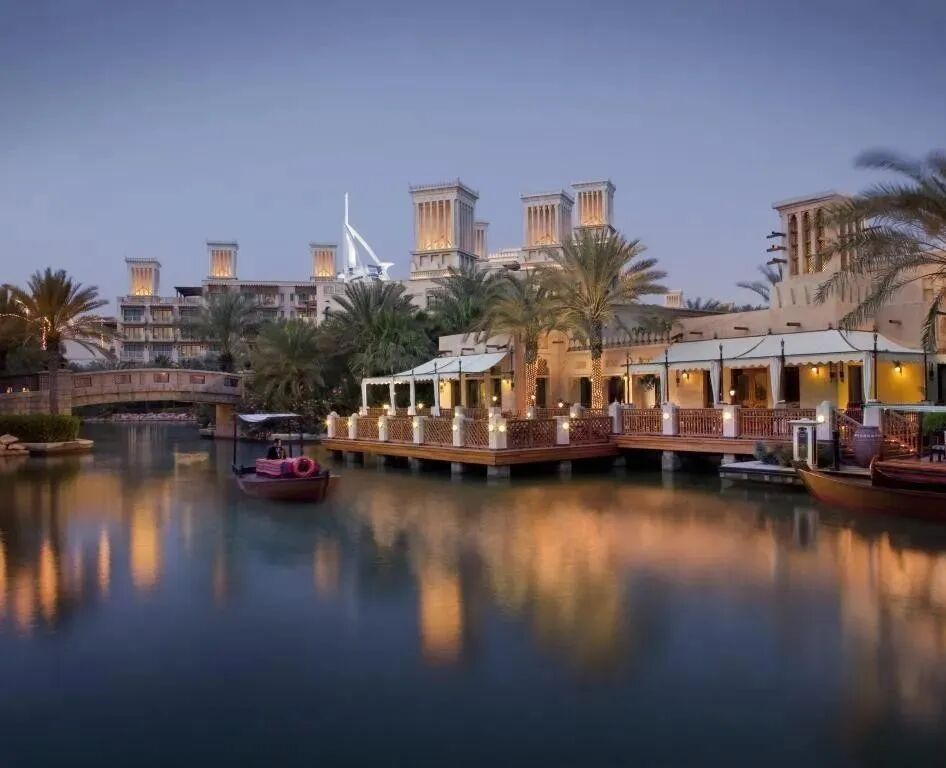
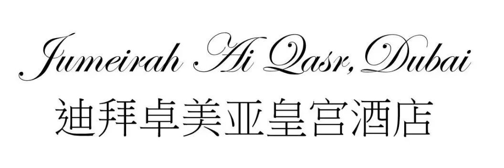
与其说是酒店，对卓美亚更贴切的形容，应该是“一座超级奢华的海上宫殿群”，因为它是由四座拉伯风情的宫殿组成的，百分百还原了阿拉伯的《一千零一夜》。
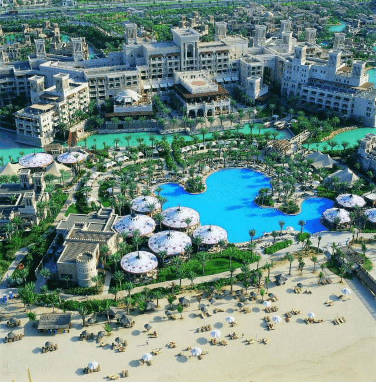
其实阿拉伯的建筑是非常有意思的，可能你对阿联酋国家建筑的第一印象是“奢华”，但其实，伊斯兰建筑也被称为“面纱建筑”。它们倾向于隐藏在高墙后面，就像蒙着面纱的中东妇女，美丽的景观从外面的街道上是看不到的，而是要你将注意力集中在室内的排布，比如庭院和房屋。
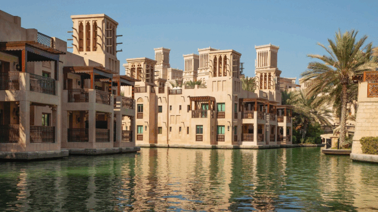
卓美亚酒店的宫殿设计就是很典型的示例，外部是传统又经典的土黄色的石墙，辅以了风塔（类似战争时，古代人用来防御的军事眺望塔）。室内则有大圆顶、精密繁复的镂空花纹、楼宇内宽大的庭院等等的夸张手法，也被反复运用在酒店内，用于表达无穷的威力。还有酒店的装饰，除了一些阿拉伯风情的金器、花瓶、水烟壶之外，还有色彩艳丽甚至用金线编织的挂毯。虽然阿拉伯男女服饰非黑即白，但地毯和挂饰却喜爱使用大块彩色拼合。
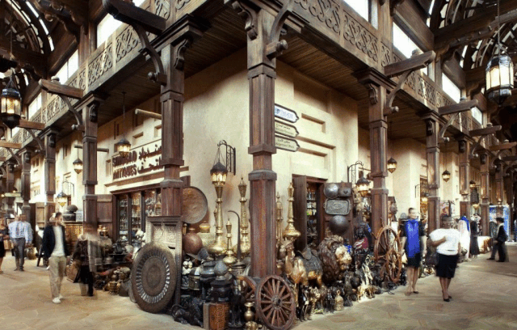
所以酒店本身就成为了一件艺术品，这意味着你无需像普通游客一样，顶着烈日出门，在一个个景点之间辗转。宫殿之间是由蜿蜒的水道连接的，足足有三公里长，你可以坐着阿拉伯特色的阿布拉船泛舟。甚至酒店还自带一座阿拉伯市集，贩卖当地handmade的工艺品，包括金光闪闪的金器，璀璨绚丽的水晶灯，手绘的色彩艳丽的餐具，还有绣着神秘花纹的长袍。
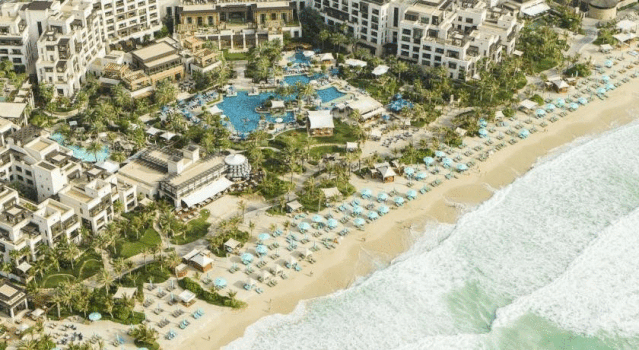
沿着波斯湾漫步，走在全长2公里的私人沙滩上（这里是眺望帆船酒店最好的视角），在Lounge里喝一杯，听着音乐等待落日。酒店还拥有50多家餐厅和酒吧，法餐、泰国餐、日本菜保证你不会腻。
【END】
欢迎留言，与我聊聊
如何定义一间好酒店呢？一间好的酒店能为我们的旅行生活带来什么？
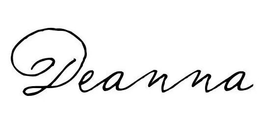
创作日期 | 2020 . 03 . 08